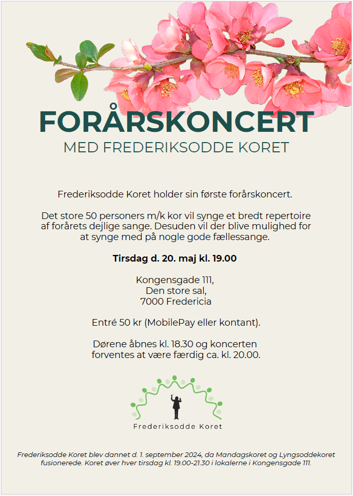

FREDERIKSODDE KORET
FREDERIKSODDE KORET
Vi elsker musik
Vi byder dig velkommen til Frederiksodde koret, som blev dannet den 1. september 2024 som en spændende sammensmeltning af Lyngsoddekoret og Mandagskoret. Med 60 engagerede medlemmer synger vi i 4 stemmer, hvilket skaber en rig og harmonisk klang. Hos os er der plads til alle – der er ingen optagelsesprøver, og alle med lyst til at synge er hjerteligt velkomne. Vores øveaftener finder sted hver tirsdag på den Kreative skole på Kongensgade i Fredericia, fra kl. 19.00 til 21.30, hvor vi sammen udforsker og udvikler vores sangfærdigheder. Kom og vær en del af fællesskabet i Frederiksodde koret, hvor musikken binder os sammen!
EFTERÅRSKONCERT D. 30 SEPTEMBER 2025 KL. 19.00
Frederiksodde koret holder efterårskoncert d. 30 september kl 19.00 ved Kongensgade 111, Den Store Sal, 7000 Fredericia. Entré er gratis.

FORÅRSKONCERT D. 20 MAJ 2025 KL. 19.00
Frederiksodde koret holder forårskoncert d. 20 maj kl 19.00 ved Kongensgade 111, Den Store Sal, 7000 Fredericia. Entré koster 50 kr som kan betales med MobilePay eller kontant
GENERALFORSAMLING DEN 18. MARTS 2025
Der afholdes ordinær generalforsamling tirsdag den 18 marts 2025 kl.19.00 i vores sædvanlige øvelokale. ( BEMÆRK: Der øves ikke på repertoire denne aften)
DAGSORDEN:
1. VALG AF DIRIGENT
2. FORMANDENS BERETNING
3. REGNSKABSAFLÆGGELSE OG GODKENDELSE (find regnskab for 2024 her)
4. VALG AF BESTYRELSE SAMT 2 SUPPLEANTER
5. VALG AF BILAGSKONTROLLANT SAMT 1 SUPPLEANT
6. VALG AF FESTUDVALG ( 4 PERSONER )
7. INDKOMNE FORSLAG
8. KONCERTPÅKLÆDNING
9. EVENTUELT
BERETNING FOR PERIODEN 1/9 2024 TIL 18/3 2025
Den 1/9 2024 blev Lyngsoddekoret og Mandagskoret lagt sammen, og blev til byens nye store kor. Et flertal af medlemmerne i de to kor valgte at korets navn skulle være Frederiksodde Koret. Koret ledes af Louise Sletting Hvilborg, og har desuden fået sit helt eget logo.
Tre medlemmer fra hvert af de to kor dannede en overgangsbestyrelse, som har virket indtil første ordinære generalforsamling, hvor den endelige bestyrelse vælges.
Koret lagde ud med fire nye sange til et repertoire, inden vi tog fat på et juleprogram som udmøntede sig i to koncerter i henholdsvis Kongensgade 111 samt Reformert Kirke. Begge med stor succes.
Derefter en hyggelig julefrokost med underholdning af forskellig art inden juleferien.
Opstart igen den 7 januar og klargøring til syng sammen arrangement den 2 februar med Jørgen Andersen. På grund af kunstudstilling i store sal, foregik det i Tavlehallen med dennes klanglige begrænsning.
BESTYRELSEN
Korleder
Louise Sletting Hvilborg
Formand
Henning Sørensen
Kasserer

Bent Ole Serup
Sekretær
Lone Jensen
Medlem
Toni Sørensen
Medlem
Bettina Jensen
Medlem
Marianne Meyer
KONTAKT
Interesseret i at være med i koret? Så kontakt os
Mobil: 29 10 26 66
Email: heje105@gmail.com